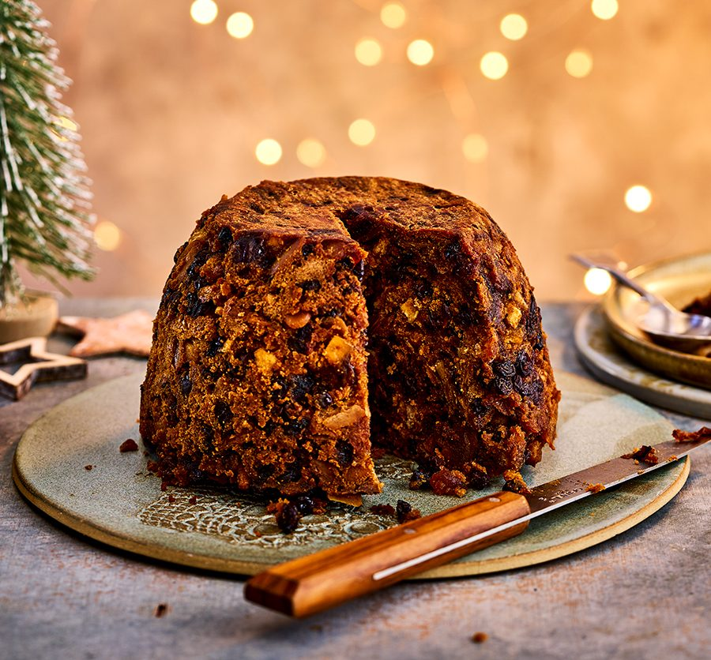
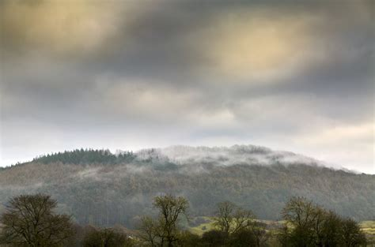
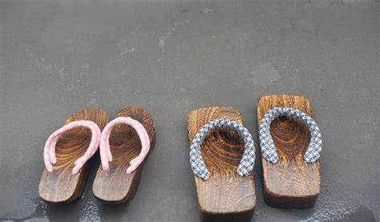

General Things
New Zealand is on the southern hemisphere. Our winter is their summer, so New Zealanders celebrate Christmas in the warm summer sun. Many flowers and trees are in bloom at this time of the year, for example the pohutukawa. The pohutukawa tree grows on the North Island, mainly in coastal areas and has lovely red blossoms. Therefore New Zealanders call the pohutukawa their Christmas tree.

As it is usually quite warm on Christmas Day, New Zealanders can eat their Christmas dinner outside. Many people have a picnic or a barbecue. And some people even have a traditional Maori hangi: they dig a hole in the ground and heat it with hot stones. Then they put meat and vegetables into this hole, cover the hole and let the food cook inside. The hangi is served in the afternoon or evening; after the delicious meal, people often sit around and sing Christmas carols.
Some New Zealanders can’t get enough of Christmas–they celebrate it twice each year: on 25 December and in July, which is mid-winter in New Zealand. So if you go to New Zealand in July, you may find hotels and restaurants fully decorated for Christmas
Eating habits

Families traditionally gather for a Christmas Dinner. While a formal dinner indoors remains traditional, barbecue lunches have increased in popularity since the 2000s, with around 43% of New Zealanders having a barbecue lunch in 2019.
Christmas lunches commonly include lamb, ham, beef, root vegetables such as potato and kūmara (sweet potato), and a variety of salads. As appropriate for the often warm summer temperatures of the day, it has become popular to serve cold meats and seafood (such as eel). Traditional Northern Hemisphere Christmas foods, such as turkey and brussels sprouts, were common in the past and continue to be eaten by a minority. Similarly, sweet dishes include both traditional British Christmas desserts (such as Christmas cake, Christmas pudding, fruit mince pies, and trifle) and local desserts such as pavlova topped with summer fruits (such as strawberries and raspberries) or kiwifruit.
Parade
Several Christmas themed parades are held in New Zealand. A popular event is Auckland's Santa Parade down Queen Street. This features numerous floats and marching bands and attracts large crowds every year. It is held late November to accommodate holidaymakers and is seen as the preamble to the later festivities.
The tradition of Carols by Candlelight is popular in New Zealand, especially in Auckland and Christchurch, where there are usually large outdoor carol-singing gatherings known as Christmas in the Park.
Media
As Christmas falls in summer, watching television is not as strong a part of New Zealand Christmas traditions as many northern hemisphere countries.
Most regular television series and current affairs shows go off-air from mid-December to mid-to-late January. No advertising is allowed on New Zealand television or radio on Christmas Day, a rule that also applies on Good Friday and Easter Sunday.
Weather
December is the beginning of summer in New Zealand, so the weather is usually warm (although not as warm as January or February).
Average high: 21 degrees Celsius (70 degrees Fahrenheit)
Average low: 15 degrees Celsius (59 degrees Fahrenheit) 
A popular present
One popular present for Christmas in New Zealand are 'jandals'. These are flip-flops/thing sandals

The name 'jandals' comes from combining the two words 'Japanese Sandals'. They've been popular in New Zealand since the late 1950s.